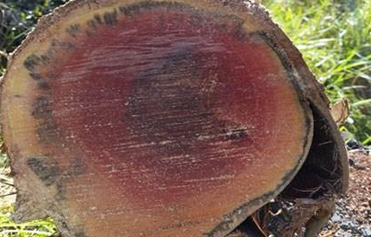
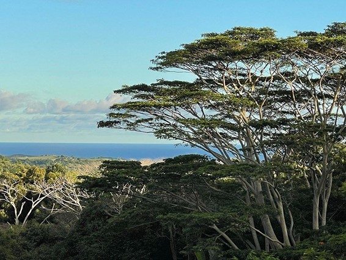
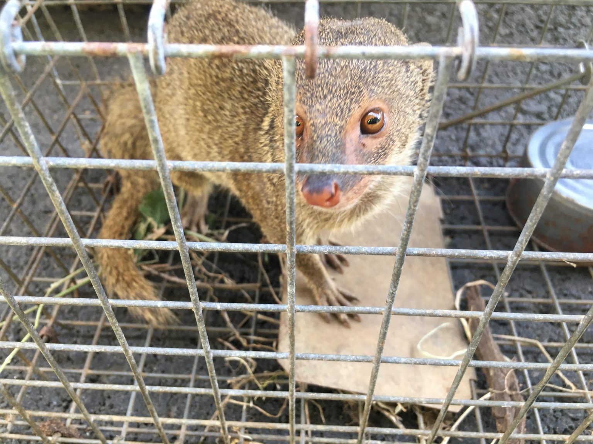

Did you know that on Hawai’i island, there are more non-native species than native ones? Hawai’i’s warm and moist island climate forms the ideal environment for many plants, animals, and fungus from all around the world. Not all of them are harmful, but some such as cats can decimate local populations of native creatures. Here are some of the biggest threats to native organisms in Hawai’i.
Rapid Ohia Death (ROD): An invasive fungal disease that has destroyed countless Ohia trees, which are defenseless against the foreign fungi that cause it. It’s important to be conscious of where ROD is present, and to clean off any tools or boots afterwards if you find yourself traversing an area infected with ROD.
Albizia Trees: These trees can grow upwards of 15 feet every year, outcompeting local species and denying sunlight to ground plants, as well as causing damage from falling branches. Reporting sightings of Albizia trees can help manage their spread, and one should do their best to remove any young Albazia trees from their property as well before they get out of hand.
Mongooses: Mongooses were originally introduced to Hawai’i island to help curb the rat population, but since their introduction they’ve devastated the population of local ground nesting birds. As with any invasive organism, reporting them can be an effective way of helping to manage them.
In addition to these three, there are many other invasive species, such as:
- Chickens
- Feral pigs
- Mosquitos
- Rats
- Fire ants
- Coconut rhinoceros beetles
- Strawberry guava
For further learning on this topic or to report sightings, visit the Big Island Invasive Species Committee website.